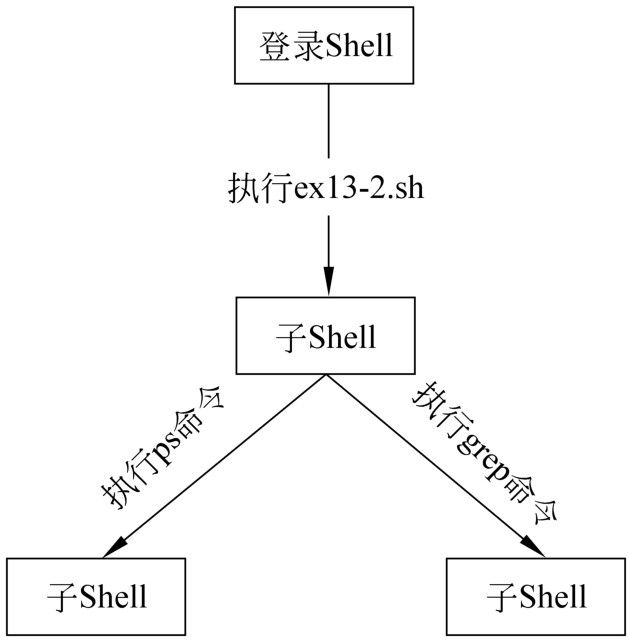

第13章
子Shell与进程处理
当用户在命令行中执行一个Shell脚本的时候，会感觉到Shell脚本就是在当前的命令行提示符下被解释的。实际上，其过程并不是用户看到的那样，在脚本被执行的时候，当前的Shell会启动另外一个Shell实例，这样的话，每个Shell脚本都有效地运行在父Shell的一个子进程中。在进行Shell编程的时候，不可避免地会遇到处理子Shell和父Shell的关系，以及进程和作业的控制，本章将对子Shell和进程处理进行介绍。
本章主要涉及的知识点如下所述。
- 子Shell：主要介绍子Shell的相关知识，包括Shell内部命令、外部命令、圆括号命令，以及子Shell中的变量的作用域等。
- 进程处理：主要介绍进程和作业的控制，包括什么是进程、通过Shell脚本管理进程、作业控制、信号，以及trap命令等。
13.1 子Shell
Shell本身也是一个程序，也可以启动自己的子进程，这些子进程称为子Shell。作为初学者，必须搞清楚子Shell与其父Shell的区别与联系，以及Shell命令与子Shell的关系。本节将对子Shell的基础知识进行介绍。
13.1.1 什么是子Shell
当用户登录Linux或者UNIX之后，操作系统会根据用户/etcpasswd文件中的配置启动一个Shell进程，该Shell进程为当前用户所执行的Shell命令的父进程。每个用户都可以指定自己的默认Shell程序，下面显示的是/etc/passwd文件的部分内容：
从上面的内容可以得知，/etc/passwd每一行描述的是一个用户的信息，每一行由7个字段组成，这些字段之间用分号隔开。7个字段的涵义如下：
其中，默认Shell程序在第7个字段定义，并且使用绝对路径表示。如果这个字段的Shell程序不存在、不合法或者执行失败，则无法登录主机。如果某个用户不需要登录，则可以将该用户的默认的Shell程序设置为/sbin/nologin。
当用户在执行一个Shell脚本的时候，父Shell会根据脚本程序的第1行#!符号后面指定的解释器程序开启一个子Shell进程，然后在子Shell的环境中执行该Shell脚本。一旦子Shell中的脚本执行完毕，该子Shell进程随即结束，并且返回到父Shell中。这个过程不会影响父Shell中的环境。
所谓子Shell，实际上是父Shell的一个子进程。子Shell本身也可以创建自己的子进程，从而成为其子进程的父Shell。从定义可以看出，父Shell和子Shell都是相对的。某个Shell可以成为一个Shell的父Shell，也可以同时成为另外一个Shell的子Shell，反之亦然。在环境变量，以及标准输入、标准输出和标准错误等方面，父Shell和子Shell是相同的。
【例13-1】演示子Shell与父Shell的关系，代码如下：
在上面的代码中，第5行通过cd命令改变当前的工作目录，第7行通过pwd命令打印当前的工作目录。
该程序的执行结果如下：
从上面的执行结果可以得知，当执行ex13-1.sh时，Shell会创建一个子Shell，子Shell和父Shell是相对独立的。用户在脚本中执行的Shell命令并不会影响到父Shell，例如第5行代码的cd命令在子Shell中改变当前的工作目录，当子Shell退出之后，父Shell当前的工作目录不受影响。
如果用户想要在当前的Shell中执行脚本，则可以使用圆点命令，如下：
从上面的执行结果可以得知，使用圆点命令在当前的Shell中执行脚本，会影响到当前Shell环境。在上面的例子中，当前Shell的工作目录已经被切换到/var/log。
 注意：圆点命令与脚本文件名之间有一个空格。
注意：圆点命令与脚本文件名之间有一个空格。
13.1.2 内部命令、保留字和外部命令
Shell命令分为内部命令和外部命令。所谓内部命令，是指包含在Shell工具包中的命令，内部命令是Shell本身的重要组成部分。内部命令嵌入在Shell程序中，并不单独以磁盘文件的形式存在于磁盘上。例如cd、bg，以及fg等命令都是bash Shell的内部命令。如表13-1所示，列出了bash Shell中常用的内部命令。
表13-1 bash Shell常用的内部命令
| 内部命令 | 说 明 |
| . | 读取Shell脚本，并在当前Shell中执行脚本 |
| alias | 设置命令别名 |
| bg | 将作业置于后台运行 |
| cd | 改变当前工作目录 |
| echo | 打印指定的文本 |
| eval | 将参数作为Shell命令执行 |
| exec | 以特定的程序取代Shell或者改变当前Shell的输出输入 |
| exit | 退出Shell |
| export | 将变量声明为环境变量 |
| fc | 与命令历史一起运行 |
| fg | 将作业置于前台运行 |
| getopts | 处理命令行选项 |
| history | 显示命令历史 |
| jobs | 显示在后台运行的作业 |
| kill | 向进程发送信号 |
| logout | 从Shell中注销 |
| pwd | 显示当前的工作目录 |
| set | 设置Shell环境变量 |
| shift | 变换命令行参数 |
内部命令实际上是Shell程序的一部分，其中包含的是一些比较简练的Linux系统命令，这些命令由Shell程序识别并在Shell程序内部完成运行，通常在加载用户的默认Shell时就被加载并驻留在系统内存中。
除了内部命令之外，还有一部分保留字也是Shell的重要组成部分，例如if、for、then，以及while等都是bash Shell的内置关键字。保留字不是Shell命令，通常用在Shell脚本中，组成Shell脚本的基本语法结构。如表13-2所示，列出了bash Shell中常用的保留字。
表13-2 bash Shell中常用的保留字
| 保留字 | 说 明 |
| ! | 逻辑非 |
| : | 空命令 |
| break | 跳出for、while，以及until循环结构 |
| case | 多重条件判断 |
| continue | 跳过for、while、until，以及select等结构中后面的语句，从头开始执行下一次循环 |
| declare | 声明并定义变量属性 |
| do | 语句块的定义，常用于for、while、until，以及select等循环结构中 |
| done | 语句块的定义，常用于for、while、until，以及select等循环结构中 |
| elif | if条件判断结构中的分支语句 |
| else | if条件判断结构中的分支语句 |
| esac | case多条件分支结构的结束语句 |
| for | 循环语句 |
| let | 执行算术运算 |
| local | 定义局部变量 |
| read | 从标准输入读取一行数据 |
| return | 从函数或者脚本返回 |
| test | 条件测试 |
| then | if条件判断结构中的关键字 |
| until | 循环语句 |
| wait | 等待后台作业完成 |
| while | 循环语句 |
外部命令是Linux系统中的实用程序部分，这些实用程序以磁盘文件的形式存在于磁盘中。在用户登录时，外部命令并不随着默认Shell的载入被加载到内存中，而是在需要的时候才被调进内存。
尽管外部命令的代码不包含在Shell程序中，但是其命令执行过程则是由Shell程序控制的。Shell程序管理外部命令执行时的路径查找和代码加载，并控制命令的执行。
绝大部分的Shell命令都是外部命令，例如ls、at、du、host，以及id等。外部命令通常位于/usr/bin及/usr/sbin等目录中，其中/usr/sbin中的命令通常与系统管理有关。
由于内部命令的代码嵌入到Shell程序中，所以当用户执行内部命令，Shell并不需要创建子Shell，而是由当前的Shell程序直接解释并执行。而外部命令则是由当前的Shell程序创建一个子Shell，然后在子Shell环境中执行的。当命令执行完成之后，子Shell退出，并返回到父Shell中。
【例13-2】说明Shell在执行外部命令时的过程，代码如下：
在上面的代码中，第5行通过ps命令、管道，以及grep命令来查找含有字符串ps的进程列表。第7行使用系统变量$SHLVL来输出当前Shell的层次，该层次以用户的登录Shell为第1层。第9行使用pidof命令获取执行脚本ex13-2.sh的子Shell的进程ID。
该程序的执行结果如下：
在上面的输出结果中，最开始的表格是第4行代码的ps命令输出的，一共有8列，分别是进程的所有者、进程ID、父进程ID、CPU使用率、进程启动时间、终端号、进程使用CPU累计时间，以及所执行的命令。在此，我们比较关注进程的ID和父进程ID。在上面的输出结果中，执行命令ps-ef的进程ID为4958，其父进程ID为4957。在接下来第7行代码的echo语句输出当前Shell的层次为2，这意味着脚本是在登录Shell的子Shell中执行。最后，pidof命令的输出结果为4957，即执行脚本的子Shell的进程ID为4957。
有了上面的结果之后，我们再进一步分析一下【例13-2】的脚本执行的整个过程。首先，无论是ps还是grep命令，都是外部命令，所以Shell会为这两个命令创建子Shell来执行。而这两个子Shell的进程ID分别为4958和4959。另外，脚本ex13-2.sh本身也是在用户登录Shell的子Shell中执行的，这个子Shell的进程ID即pidof命令的输出结果，即4957。而这个进程ID恰好是登录Shell的子Shell的进程ID。因此，【例13-2】中的Shell之间的关系如图13-1所示。

图13-1 【例13-2】中的子Shell之间的关系
13.1.3 在子Shell中执行命令
接下来讨论一下在哪些情况下Shell会在子Shell中执行命令。实际上，不同的Shell可能会以不同的方式来执行命令。但是，在bash Shell中，以下几种情况通常会使Shell在其子Shell中执行命令。
1．圆括号结构
当一组命令放在圆括号中时，该组命令会在一个子Shell环境中执行，其语法如下：
在上面的语法中，command1、command2，以及command3等都是Shell命令，这些命令写在一行中，它们之间用分号隔开。
如果每一行只有一条命令，则可以省略分号，变成以下语法形式：
【例13-3】演示圆括号结构的使用方法，代码如下：
在上面的代码中，第6行使用系统变量BASH_SUBSHELL获取当前子Shell的层次。如果当前环境为用户登录时默认的Shell，则该变量的值为0。第10行在圆括号结构外面定义了一个变量outer_variable，并且赋予了初始值。第12～21行是圆括号结构，其中包含4条语句。第14行在圆括号内部输出子Shell的层次。第16行定义了另外一个变量inner_variable。第18行输出变量inner_variable的值，第20行输出变量outer_variable的值。
第25行重新在圆括号结构外面输出当前子Shell的层次。第28～33行判断变量$inner_variable是否已经被定义，并且根据不同的情况输出不同的消息。第35行输出圆括号结构内定义的变量inner_variable的值。
该程序的执行结果如下：
在上面的输出结果中，可以发现代码第6行的echo语句的输出结果为0，表示当前处于最顶层的子Shell中。而代码第14行的echo语句的输出结果为1，表示当前子Shell的层次为1。代码第18行和第20行的echo语句分别输出了圆括号外面和内部定义的两个变量值。从上面的执行结果可以得知，子Shell中可以访问父Shell中定义的变量的值。代码第25行的echo语句的输出结果为0，表示程序已经退出子Shell。最后，在子Shell中定义的变量不能在父Shell中访问。
由于圆括号结构中的命令都是在一个子Shell中执行的，与调用另外一个脚本中的代码非常相似，所以通过圆括号结构，用户可以将Shell程序中的某一段代码放在后台执行，其实现方法就是在圆括号结构的后面使用&操作符。
【例13-4】演示将脚本中的部分代码放在后台执行的方法，代码如下：
在上面的代码中，第7～16行是整个圆括号结构。第8行定义了循环变量count，并且赋予初始值1。第9行是while循环结构的开始，其循环条件为变量count的值小于等于10。第11行输出循环变量的值，第12行使得当前的进程睡眠1秒钟。第14行又是另外一个嵌套两层的圆括号结构，在该结构中执行循环变量的自增。第16行使用&操作符将整个圆括号结构置于后台执行。
该程序的执行结果如下：
当用户输入以上命令执行ex13-4.sh的时候，当前的Shell会创建一个子进程来执行脚本文件。代码第5行的echo语句输出了一条信息。当遇到圆括号及&操作符的时候，Shell会将其中的命令放在另外一个子Shell中并且作为后台作业执行。此时，执行脚本文件的子进程和圆括号中的代码是并行地执行的。所以执行脚本ex13-4.sh的子进程继续执行圆括号后面的代码，即代码第17行的echo语句输出另外一条信息。此时，正在后台执行的圆括号中的代码输出了循环变量的值1。
执行脚本的子进程在执行完代码第17行的echo语句后退出，返回到命令提示符。而圆括号中的代码却仍然在执行，依次输出了2～10的值。
通过上面的例子可以得知，子Shell中的代码可以访问父Shell中的变量的值。并且，当变量的值在子Shell中修改之后，在父Shell中可以获得变化之后的值。
注意：在【例13-4】中第14行的语句使用了两层圆括号，所以会导致产生两层子Shell。
2．后台执行或异步执行
在某些情况下，Shell命令需要较长的时间来执行，尤其是在处理大量的数据的时候。在这种情况下，用户可以将命令置于后台执行，而不必等待命令执行结束。
将命令置于后台执行的语法如下：
其中，command表示要执行的命令，&操作符表示将前面的命令置于后台执行。在命令末尾追加&操作符之后，当前命令会由一个子Shell在后台执行。当前的Shell会立即获得控制权并且返回到命令行提示符。后台命令和当前的Shell是并行的，相互之间没有依赖及等待关系。这意味着，后台命令和当前Shell是异步的并行。
用户可以在任何一个Shell命令后面使用&操作符，将该命令置于后台运行。关于&操作符的例子，在上面的【例13-4】中已经介绍过了，此处不再详细说明。
3．命令替换
命令替换的语法如下：
或者
其中，command表示要执行的命令。command会在一个子Shell中执行，不会影响当前的Shell环境。
【例13-5】演示使用命令替换在子Shell中执行命令，代码如下：
在上面的代码中，第5行使用$()符号执行一组Shell命令，这些命令之间用分号隔开，第1个命令为cd，将子Shell的当前工作目录切换到根目录；第2个命令为echo，用来输出一行提示信息；第3个命令为pwd，输出当前工作目录。第10行在父Shell中输出当前的工作目录。
该程序的执行结果如下：
从上面的执行结果可以得知，子Shell中的cd命令只会改变子Shell的工作目录，并不影响父Shell的环境，因此，在上面的例子中，父Shell的工作目录仍然为/root/chapter13，并没有切换到根目录。
除了以上两种在子Shell中执行命令的方法之外，还有其他一些方法，例如管道以及进程替换等。在不同的Shell中，对于管道和进程替换的处理方法会有所不同，读者可以参考相关的书籍，不再详细介绍。
13.1.4 把子Shell中的变量值传回父Shell
在子Shell中，代码可以访问父Shell的变量；反之，在父Shell中，无法访问到子Shell中的变量的值。但是，用户可以通过一些变通的技巧来取得子Shell中的变量的值。下面将分别进行介绍。
1．通过临时文件
在Linux中，通过临时文件传递数据是一个非常重要的技巧，许多地方都能使用到。对于磁盘文件来说，只要拥有足够的权限，任何进程都可以访问到。另外，通过临时文件，用户可以在进程之间传递大量的数据，不会受到内存空间的限制。
【例13-6】演示通过临时文件在父子Shell之间传递数据，代码如下：
在上面的代码中，第4～9行是圆括号结构，将在子Shell中执行。第6行定义了一个名称为x的变量，第8行将变量x的值通过重定向输出到临时文件tmp中。第12行在父Shell中直接引用变量x的值。第14行通过read语句从临时文件中读取变量x的值。
该程序的执行结果如下：
从上面的执行结果可以得知，第12行的echo语句的输出为空串。而第16行的echo语句正确输出了变量x的值。
2．使用命名管道
命名管道是Linux及UNIX系统中的最古老的进程间通信的方式，同时也是一个相对比较简单的通信机制。
【例13-7】演示使用命名管道实现向父shell传递数据的方法，代码如下：
在上面的代码中，第5～7行判断命名管道fifo是否存在，如果不存在，则创建该管道。第10～14行是圆括号结构，并且在圆括号后面使用了&操作符将该结构放在后台运行。第16行从命名管道fifo中读取数据。
该程序的执行结果如下：
3．不使用子Shell
之所以出现以上变量传递问题，是因为使用了子Shell。如果不使用子Shell，则以上问题就不存在。当用户在某个Shell脚本中调用另外一个脚本时，被调用的脚本会在子Shell中执行。但是，用户可以通过圆点命令和source命令来执行脚本，使得被调用的脚本在当前Shell进程中执行。
【例13-8】演示两个脚本之间传递数据的方法，其中output.sh的代码如下：
从上面的代码可以得知，output.sh的功能非常简单，只是输出变量message的值。但是变量message并没有在当前脚本中定义。
脚本ex13-8.sh的代码如下：
在上面的代码中，第5行定义了名称为message的变量，第8行使用source命令调用output.sh脚本。
上述程序的执行结果如下；
从上面的执行结果可以得知，尽管变量在ex13-8.sh脚本中定义，但是仍然可以在output.sh脚本中访问。之所以会这样，是因为在第8行中使用source命令调用output.sh脚本，这使得output.sh脚本与ex13-8.sh脚本在同一个Shell进程中执行，所以两者的变量可以相互访问。
除了上面介绍的临时文件和命名管道之外，还有许多方法可以实现子Shell向父Shell传递数据，例如命令替换和使用eval命令等，读者可以根据自己的实际情况来选择适当的通信机制。
13.2 进程处理
在进行系统维护的过程中，经常会遇到进程和作业的处理问题。通过Shell编程，用户可以对进程和作业进行有效地管理。本节介绍如何通过Shell进行进程的相关操作。
13.2.1 什么是进程
在讲到进程的时候，不得不提到另外一个概念，即程序。通常情况下，我们所讲的程序是计算机指令的集合，是一个静态的概念。
进程是指在自身的虚拟地址空间运行的一个单独的程序，是程序执行的基本单元。进程会利用处理器资源、内存资源，并且进行各种I/O操作，从而完成某项指定的任务。因此，进程是一个动态的概念。
进程与程序是有区别的，进程不是程序，虽然它由程序产生。程序只是一个静态的指令集合，不占系统的运行资源；而进程是一个随时都可能发生变化的、动态的、使用系统运行资源的程序。而且一个程序可以启动多个进程。
大致来说，Linux中的进程可以分为以下3类。
- 交互进程：由Shell启动的进程。交互进程既可以在前台运行，也可以在后台运行。
- 批处理进程：进程序列。
- 监控进程：又称为守护进程，Linux的服务进程，在后台运行。
13.2.2 通过脚本监控进程
通常情况下，通过脚本来监控进程可以收到事半功倍的效果。例如，在绝大部分的Web服务器都是运行在Linux上面。但是在某些情况下，Web服务器的进程httpd会由于某些错误而退出，导致用户的网站不能访问。而系统管理员则不可能会24小时都在监控Web服务器的运行状态。
在这种情况下，系统管理员可以编写一个脚本来监控Web服务器进程是否存在，如果不存在，则重新启动该服务进程。
【例13-9】演示Web服务器监控脚本的编写方法，代码如下：
在上面的代码中，第7行定义了重新启动Apache Web访问进程的命令；第10行定义了pgrep命令的路径；第13行定义了Apache Web服务的进程名称；第16行使用pgrep命令判断Apache Web服务进程是否存在，其中的重定向是为了避免pgrep命令输出信息。第18行通过系统变量$?判断第16行的pgrep命令是否执行成功，如果不等于0，则表示不存在Apache Web服务进程，从而在第20行启动该服务进程。
为了能够周期性地检查Apache Web服务的进程是否存在，用户可以使用crontab任务计划来定期执行上面的脚本，代码如下：
以上代码表示每30秒钟执行一次/root/chapter13/ex13-9.sh脚本。
13.2.3 作业控制
通常情况下，我们将一个正在执行的进程称为一个作业。尽管进程和作业密不可分，但是进程和作业是有区别的。一般来说，作业是针对用户而言的，是用户为了完成某项任务而启动的进程，一个作业可以包含一个进程，也可以包含多个进程，这些进程之间相互协作，共同完成任务。而进程则是针对操作系统而言的，是操作系统中程序执行的基本单位。
例如，下面的一组名称可以称为一个作业，其功能是在ls命令的手册中查找包含long字符串的文本行，然后将匹配结果传递给more命令，代码如下：
尽管上面的一组命令构成了一个作业，但是实际上Shell会启动3个进程，分别执行man、grep及more命令。
作业控制指的是用户控制正在运行的组成作业的进程的行为。在前面已经介绍过，用户可以在命令的后面附加&操作符，使该命令在后台执行。另外，用户还可以将作业中的某个进程挂起，暂停其执行，然后在某个时刻继续执行该进程。
【例13-10】演示将进程进行前后台切换的方法，代码如下：
上面的代码比较简单，其中第5行使用sleep命令使当前进程休眠10秒钟。sleep命令的功能是使进程休眠指定的时间，其基本语法如下：
其中，参数number表示要休眠的时间长度，参数suffix表示时间单位，默认为秒，可以是秒、分钟、小时及天等，这些时间单位分别使用s、m、h及d等字母表示。
在命令行中输入以下命令执行ex13-10.sh：
当用户输入以上命令，并且按回车键之后，Shell会将脚本放在后台执行，并且立即返回两个数字，其中方括号中的数字为作业号，后面的数字为执行脚本的进程ID。由于脚本在后台执行，所以用户可以同时执行其他的操作。当作业执行完成之后，会在命令行给出以下提示：
以上提示包括作业号、状态，以及所执行的命令。
在执行前台作业的时候，用户可以通过组合键Ctrl+Z使当前的作业挂起，例如，用户在命令行中输入以下命令：
当按回车键之后，Shell会调用vi编辑器，出现一个全屏编辑窗口。在编辑文本的过程中，用户需要暂时退出vi编辑器，执行其他的命令。则可以先切换到vi的命令状态，然后按下Ctrl+Z组合键。此时，Shell会给出以下提示信息：
以上信息告诉用户，作业号为1的作业已经被挂起，其命令为vi demo.sh。接下来就是Shell的命令提示符。
当用户处理完其他任务之后，可以使用fg命令将后台执行的作业切换到前台执行，如下：
fg是一个内部命令，其作用是将后台的作业移至前台执行，其基本语法如下：
在上面的语法中，参数jobspec用来指定要切换的作业，可以是作业号或者是作业的命令名称等。如果省略该参数，则表示将作业号为1的作业移至前台。因此，如果当前系统中只有一个作业在后台运行，则可以直接使用fg命令，省略其他参数。如表13-3所示，列出了fg命令中用来指定作业的方法。
表13-3 fg命令中指定作业的方法
| 方 法 | 说 明 |
| %n | n为整数，表示作业号 |
| %string | 以字符串string开头的命令所对应的作业 |
| %?string | 包含字符串string的命令所对应的作业 |
| %+或者%% | 最近提交的一个作业 |
| %- | 倒数第2个提交的作业 |
例如，以下命令将以字符串vi开头的命令所对应的作业移至前台：
前台作业和后台作业在功能上并没有什么不同。只是前台作业会占用终端窗口，用户不能同时执行其他命令，必须等待前台作业完成才能执行其他操作。而后台作业则不占用终端窗口，用户可以同时执行其他操作。
Shell提供了另外一个内部命令jobs，用来查看正在后台执行的作业的列表，其基本语法如下：
其中，options表示jobs命令的选项，常用的选项有-l和-p，前者显示作业的详细信息，后者只显示作业的进程ID。例如，下面的jobs命令列出当前用户的所有后台作业：
通过上面的结果，可以得知当前用户有3个后台作业在执行。默认情况下，jobs命令的输出结果包含3列，第1列为作业号，如果在某个作业号后面有一个加号+，则表示当前作业为默认作业。也就是说，在使用fg命令管理作业的时候，如果没有指定作业，则会将作业号后面附加+符号的作业移至前台。
另外，在上面的输出结果中，编号为2的作业号后面有一个减号-，该符号表示当前作业为即将成为默认作业的作业。也就是说，当含有+符号的作业退出之后，含有-符号的做作业将成为默认作业。
对于其他的作业，作业号后面是一个空格。对于同一个用户来说，只能有一个作业使用+符号标识，也只能有一个作业使用-符号标识。
在jobs命令的输出结果中，第2列为作业的执行状态。如表13-4所示，列出了几种常见的作业状态。
表13-4 作业状态
| 状 态 | 说 明 |
| Running | 该作业并没有被挂起，而是正在运行 |
| Done | 该作业已经完成并返回退出状态码0 |
| Done (code) | 该作业已经正常完成和退出，并返回指定的非0退出状态码code。状态码使用十进制表示 |
| Stopped | 该作业被挂起 |
用户可以使用disown命令来删除作业列表中的作业，该命令的基本语法如下：
在上面的语法中，参数jobspec表示要从列表中删除的作业。与fd命令一样，用户可以使用作业号、进程ID，以及命令名称等方法来指定作业。
下面的例子演示了disown命令的使用方法。首先执行3个vi命令，并且使其在后台执行，代码如下：
通过最后的jobs命令，可以得知当前有3个作业被挂起。其中3号作业为默认作业， 2号作业为即将成为默认作业的作业。接下来的命令将1号作业删除，代码如下：
在上面的命令中，disown使用%1作为参数。执行完该命令之后，Shell给出一条警告信息，告诉用户1号作业已经被删除。然后通过jobs命令再次输出作业列表，发现只剩下2号和3号作业。
注意：删除作业还可以使用kill命令，该命令将在信号中介绍。
13.2.4 信号与trap命令
信号在Linux系统中是非常重要的一种通信机制。信号在软件层次上模拟了硬件中断机制。因此，简单地讲，信号即软件中断。在Linux系统中，用户可以通过kill命令给某个进程发送一个特定的信号，也可以通过键盘发送一些信号，比如组合键CTRL+C可能触发SIGINT信号，而组合键CTRL+\可能触发SIGQUIT信号等。
绝大部分的系统都预定义了一些信号，用户可以通过kill命令的-l选项来列出当前系统支持的信号，代码如下：
注意：用户还可以通过man 7 signal命令查看有关信号的帮助手册。
如表13-5所示，列出了常用的信号及其涵义。
表13-5 常用信号及其涵义
| 信 号 | 值 | 涵义 |
| SIGHUP | 1 | 终端挂起或者控制进程终止 |
| SIGINT | 2 | 键盘中断 |
| SIGQUIT | 3 | 键盘的退出键被按下 |
| SIGABRT | 6 | 由abort(3)发出的退出指令 |
| SIGKILL | 9 | 立即结束进程 |
表13-5只列出了最常用的几个信号，关于其他的信号，读者可以参考Linux的帮助手册。对于管理员来说，最常用的信号是SIGKILL，该信号用来立即结束进程的运行。SIGKILL信号不能被阻塞、处理和忽略。如果管理员发现某个进程终止不了，可尝试发送这个信号。
前面讲过，删除作业的方法除了使用disown命令之外，还可以使用kill命令。kill的基本语法如下：
在上面的语法中，-s选项用来指定要发送的信号，-p选项表示只是打印指定名称的进程的进程ID，不发送信号，参数pid表示某个特定的进程ID。
下面的例子演示了如何使用kill命令来删除作业。首先使用jobs命令列出当前的作业列表，如下：
由于kill需要指定进程ID，所以还要使用jobs命令的-p选项输出作业的进程ID。现在想要删除进程ID为30881的作业，可以使用以下命令：
以上命令表示向进程ID为30881的进程发送值为9的信号，即SIGKILL信号。执行完以上命令之后，再次使用jobs命令查看作业列表，代码如下：
从上面的执行结果可以得知，2号作业的状态为Killed，表示该作业已经退出。在接下来的作业列表中，该项作业已经消失。
注意：kill命令中的-s可以省略，直接使用数字，例如上面的命令可以直接写成kill -9 30881。
对于有些信号，进程会有默认的响应动作，而有些信号，进程可能直接会忽略，当然，用户还可以对某些信号设定专门的处理函数。在Shell程序中，用户可以通过trap命令来设定响应某个信号的动作。trap是一个内部命令，其基本语法如下：
在上面的语法中，参数arg表示信号响应操作的函数，sigspec表示特定的信号。
【例13-11】演示trap命令的使用方法，代码如下：
在上面的代码中，第5～7行定义了响应信号的函数，该函数比较简单，只是输出一行消息。第10行通过trap命令将函数与信号0绑定。信号0是一个特殊的信号，在POSIX标准中，把0定义为空信号，当进程退出时会触发该信号。因此用户经常使用该信号来判断一个特定的进程是否存在。
该程序的执行结果如下：
13.3 小结
本章详细介绍了子Shell以及进程和作业管理，主要包括什么是子Shell、内部命令、外部命令、圆括号结构、子Shell中的变量作用域、把子Shell中的变量值传回父Shell、什么是进程、创建单进程脚本、作业控制，以及信号与trap命令。重点在于掌握子Shell的基本概念、什么情况下会使用子Shell、子Shell的变量及其作用域、父子Shell的数据传递，以及作业的控制等相关知识。在下一章中将介绍Shell脚本调试技术。
Table of contents
- 内容简介
- 前言
- 目录
- 第1篇 认识Shell编程
-
第2篇 Shell编程基础
- 第3章 变量和引用
- 第4章 条件测试和判断语句
- 第5章 循 环 结 构
- 第6章 函数
- 第7章 数组
- 第8章 正则表达式
- 第9章 基本文本处理
- 第10章 流 编 辑
- 第11章 文本处理利器awk命令
- 第12章 文件的操作
- 第13章 子Shell与进程处理
- 第3篇 Shell编程实战
- 附录CD